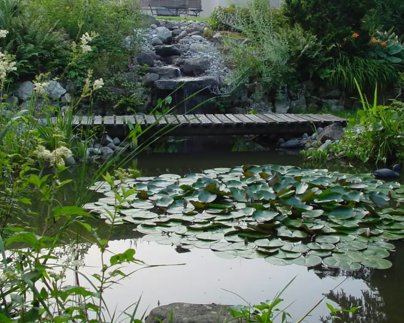
Wasser
Wasser besitzt eine eigene Magie.
Unsere Blicke wandern automatisch zum Wasser. Ein Gartenteich bietet Lebensraum für Pflanzen und Tiere und lädt zum Beobachten und Geniessen der Ruhe ein.
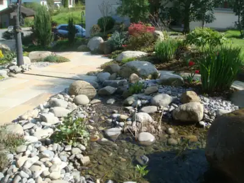
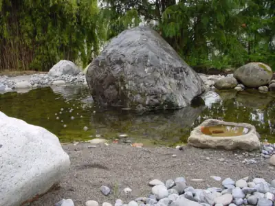
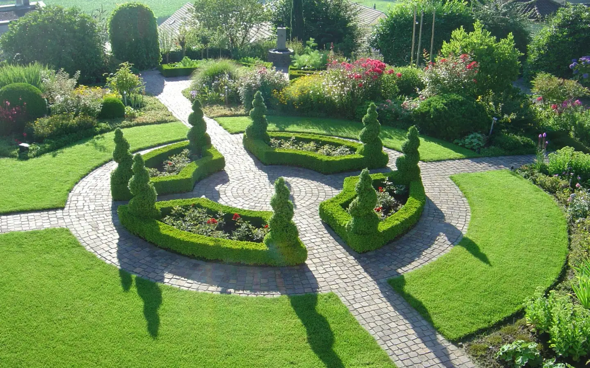
R. Müller Gartengestaltung GmbHEmmen, seit 1980
Seit 1980 mit der Natur verbunden. Wir planen, gestalten und pflegen Ihren Garten in der Region Zentralschweiz.
Formschnitt und Pflasterwege, aus unseren Gärten
Wasser, Steine, Pflanzen und ein Platz zum Verweilen: Wir planen, gestalten und pflegen Ihren Garten.
Der Plan zeigt, was wir für Sie bauen. Jede Nummer führt zu einem Foto aus unseren Gärten.
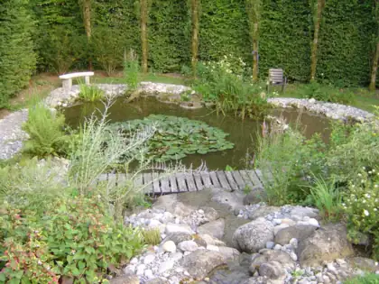
1Teich mit Steg
Ein Gartenteich bietet Lebensraum für Pflanzen und Tiere und lädt zum Beobachten und Geniessen der Ruhe ein.
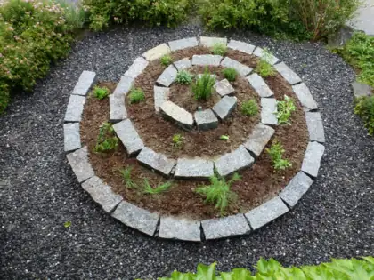
2Kräuterspirale
Eine Vielfalt von Kräutern standortgerecht auf engstem Raum pflanzen.
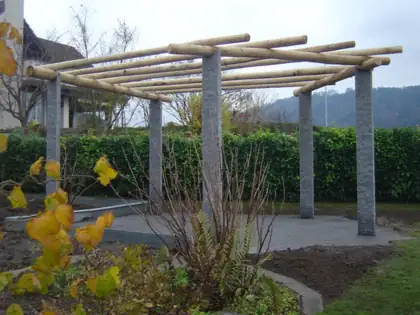
3Pergola
Ein Sitzplatz, eventuell durch eine Pergola beschattet, lädt zum Verweilen im Garten ein.
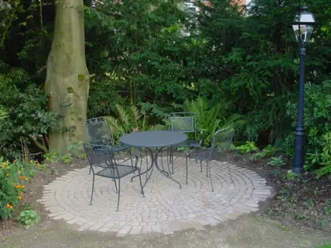
4Runder Sitzplatz
Sitzplätze und Wege aus Naturstein vermitteln die gewünschten Räume im Garten.
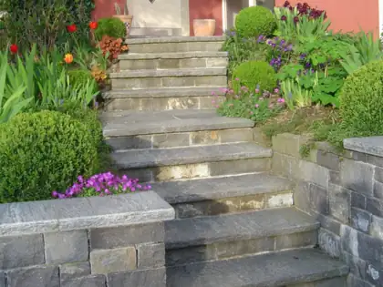
5Natursteinmauer und Treppe
Mauern und Treppen aus Naturstein zeichnen und gestalten die Landschaft Ihres Gartens.
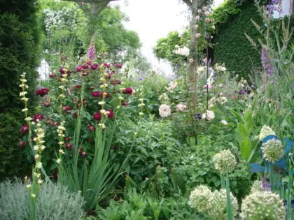
6Bepflanzung
Eine vielseitige und abgestimmte Bepflanzung lässt die vier Jahreszeiten hautnah miterleben.
Wasser, Steine und Pflanzen, für Ihren Garten gebaut.

Wasser
Unsere Blicke wandern automatisch zum Wasser. Ein Gartenteich bietet Lebensraum für Pflanzen und Tiere und lädt zum Beobachten und Geniessen der Ruhe ein.


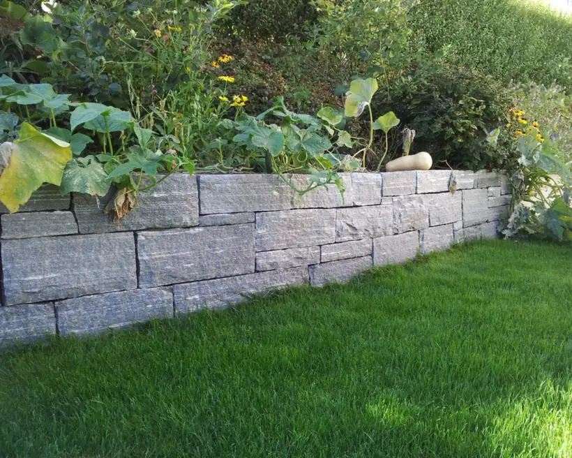
Stein
Mauern und Treppen, Sitzplätze und Wege aus Naturstein zeichnen und gestalten die Landschaft und vermitteln die gewünschten Räume im Garten.
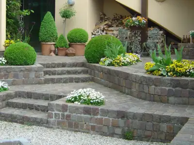
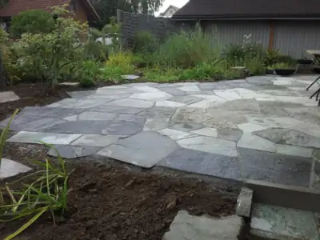
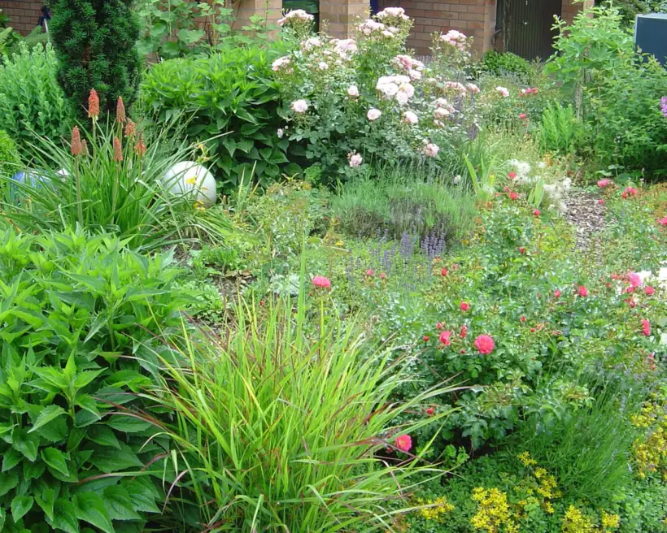
Pflanzen
Eine vielseitige und abgestimmte Bepflanzung in Ihrem Garten lässt die vier Jahreszeiten hautnah miterleben. Eine Kräuterspirale bringt eine Vielfalt von Kräutern auf engstem Raum zusammen.
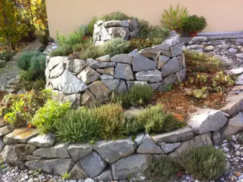
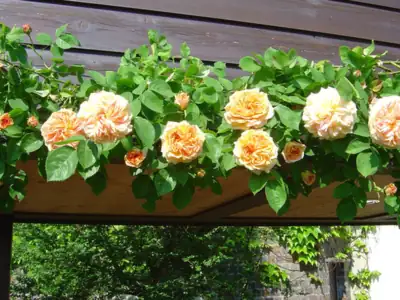
Ebenfalls im Gartenbau
«Kunst verleiht Ihrem Garten einen besonderen Touch und eine aussergewöhnliche Stimmung.»
Zu keiner Zeit waren Gärten von ihrem Erholungswert her so bedeutungsvoll wie heute.
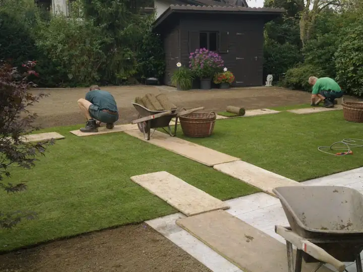
Ein Garten ist ein Ausgleich zum sonst eher hektischen Leben. Es braucht das aufmerksame Auge, das die nötigen Arbeiten erkennt.
Bodendeckende Pflanzen wirken durch ihre Blätter dekorativ. Zwiebelgewächse, Gräser, Stauden und Sträucher setzen die Akzente.
Bäume und Sträucher bilden das Gerüst des Gartens und prägen das Gartenbild stärker als andere Pflanzen.
Damit sich Flora und Fauna wohl fühlen, braucht ein angelegter Teich gezielte Pflege.
Sattgrüne Flächen oder im Wind wehende Blumen und Gräser.
Unterhalt der Grünflächen rund um Wohnüberbauungen.
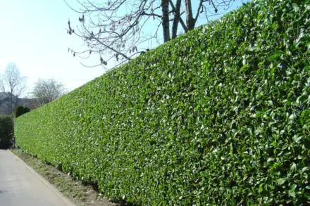
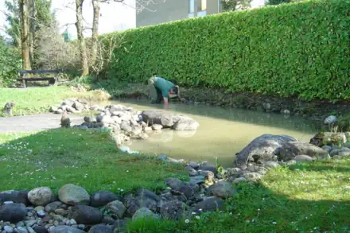
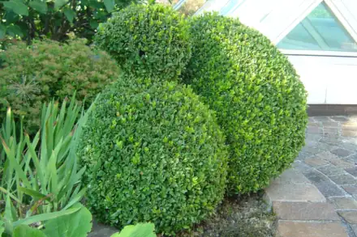
Wir pflegen Gräber auf den Friedhöfen Emmen-Dorf, Emmenbrücke-Gerliswil, Malters und Buchrain und sind Mitglied der Stiftung Dauergrabpflege Luzern.
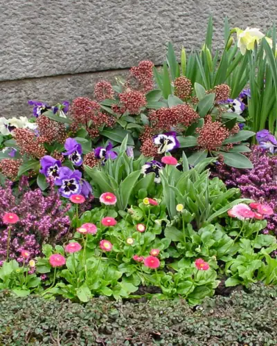
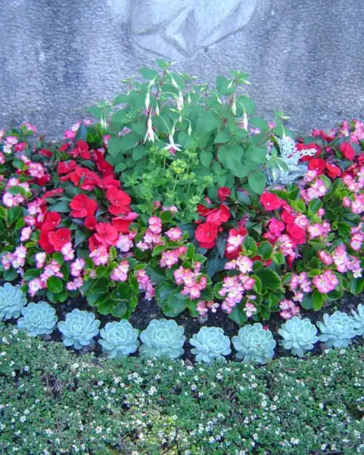
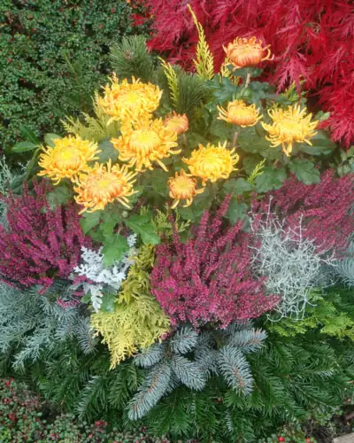
1980 gründete Ruedi Müller aus Emmen die Einzelfirma Ruedi Müller Gartengestaltung und baute während 25 Jahren einen treuen Kundenstamm auf. 2005 wandelte er sie gemeinsam mit Georg Ettlin in die R. Müller Gartengestaltung GmbH um. Seit 2016 führt Gärtnermeister Georg Ettlin die Firma.
Dank langjährigen und erfahrenen Mitarbeitern zählen wir auf ein konstantes Team.
Mehr über unsGeschäftsführung, Gärtnermeister
im Betrieb seit 1995
Geschäftsführung, Administration
Landschaftsgärtner
im Betrieb seit 1988
Gärtner und Metallbauer
im Betrieb seit 2026
Für Ihr Interesse an unseren Dienstleistungen, für konkrete Fragen oder Anliegen stehen wir Ihnen gerne zur Verfügung.
Telefon041 260 90 59